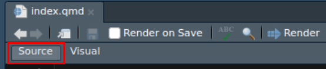

worldbank = FileAttachment("data/worldbank.zip").zip()Criar mapas para a Web com quarto {ojs} e geoviz
O objetivo desta sessão é introduzir o participante à criação de mapas interativos utilizando o Quarto e a biblioteca JavaScript geoviz.
1 Introdução
Antes de começar, por favor, certifique-se que leu a apresentação de introdução à Web, à sua história, às suas linguagens e ao Observable JavaScript. Ela é um pré-requisito para compreender o que vem a seguir.
2 Introdução a Quarto
2.1 Ambiente de software.
Este tutorial utiliza o software Quarto. Para o instalar, pode usar o link seguinte:
https://quarto.org/docs/get-started
A seguir, precisa de um ambiente de desenvolvimento para escrever o código e ver os resultados. Tem várias escolhas possíveis:

Nesta sessão, vamos usar o RStudio, um IDE mais focado para a linguagem R mas que integra de forma muito eficiente a criação de notebooks com Quarto onde se pode integrar listagens de código JavaScript.
2.2 Criar um documento Quarto
- No seu computador, crie uma pasta
TP_geoviznum local à sua escolha. - Abra o RStudio
- Crie um documento
Quarto (ficheiro > Novo ficheiro > Documento Quarto`
- Clique em “Criar documento vazio” no canto inferior esquerdo.
- Mude para o modo de código fonte (`Source`).

Irá obter um ficheiro com as seguintes linhas:
---
title: "Untitled"
format: html
editor: visual
---A informação delimitada pelos simbolos `—` correspondem a especificação yaml do ficheiro, uma linguagem de configuração.
Selecionar um título Guardar o ficheiro index.qmd na pasta TP_geoviz. Nesta pasta, pode criar também uma subdiretoria de dados para armazenar os dados.
2.3 Resumo das bases
Neste tutorial, vamos criar mapas utilizando Observable JavaScript (ou ojs). Lembre-se que ojs é um conjunto de melhorias feitas no JavaScript com o objetivo de torná-lo uma linguagem dedicada à visualização de dados para a web. Essa linguagem está totalmente integrada em Quarto.
As características do ojs são as seguintes:
- √â JavaScript + bibliotecas pr√©-carregadas como Plot & d3js üìä
- Tudo √© reativo üî• e reproduzido em tempo real
- A ordem das c√©lulas não importa ü§Ø
- Cada início de linha identifica uma célula ojs. O nome destas células deve ser único para todo o documento.
Em Quarto, todas as instruções a seguir são escritas em pedaços de ojs
```{ojs}
```
Cuidado
Os chunks e as células são dois conceitos diferentes.
Um chunk que contém uma única célula
sum = 10 + 10Um chunk que contém três células
a = 10
b = 20
c = a * bUm chunk que contém uma única célula
{
// código JavaScript
let a = 10
let b = 20
return a * b
}Para cada bloco, pode utilizar echo para definir se pretende ou não que o código seja apresentado no seu bloco de notas final. Com eval, pode escolher se o código deve ou não ser executado.
```{ojs}
/ / | echo: false
/ / | eval: true
```
O código em linha também permite a execução de código dentro do texto no formato markdown. A sintaxe do código em linha é semelhante à dos blocos de código, exceto que é utilizado um único traço (`) em vez de três traços (```).
raio = 5O raio da circunferência é igual a **``{ojs} radius``**.resulta nisto :
O raio do círculo é igual a 5Para gerar o documento, clique no botão Renderizar ou utilize o atalho de teclado Ctrl+Shift+K.
Depois de ter clicado em *Renderizar*, a página Web é apresentada no painel Visualizador e é criada uma pasta Docs. Ela contém o site gerado.
Também pode clicar no ícone Ver numa nova janela para ver o documento no seu navegador Web habitual.
2.4 Documentação e exemplos
Ao longo deste caderno, pode consultar a documentação clicando neste ícone.
Também pode aceder a exemplos pedagógicos e demonstrações online clicando neste ícone.
3 Os dados
O conjunto de dados utilizado provém do Banco Mundial. Os dados foram formatados aqui.
Descarregue os dados e coloque o ficheiro zip no seu diretório de dados.

3.1 Importação dos dados
Em {ojs}, importamos os dados com a instrução FileAttachment()
Uma vez que os dados estão no formato .zip, escrevemos :
Este ficheiro zip contém 3 ficheiros.
worldbank.filenamesExistem várias funções disponíveis para interpretar formatos de dados. A função .csv() é utilizada para importar dados csv. A função .xlsx() é utilizada para importar folhas de cálculo Excel. A função .json() é utilizada para importar dados em formato JSON. Aqui, vamos criar 3 conjuntos de dados distintos.
- Os dados
data = worldbank.file("data.csv").csv()- Os metadados
metadata = worldbank.file("metadata.csv").csv()- As bases dos mapas (países do mundo)
world = worldbank.file("world.json").json()3.2 Visualização de dados de atributos
Para visualizar uma tabela de dados, pode utilizar a instrução Inputs.table().
Inputs.table(data)Inputs.table(metadata)Esta visualização de tabela também pode ser combinada com a função Inputs.search().
viewof search = Inputs.search(data, { query: "Portugal" })
Inputs.table(search)
Dica
É possível combinar instruções em R e instruções em ojs utilizando a instrução ojs_define().
Por exemplo :
# chunk r
datafromr <- read.csv("data/data.csv")
ojs_define(ojsdata = datafromr)// chunk ojs
Inputs.table(transpose(ojsdata))Também funciona com objectos espaciais. Mas para isso, é preciso fazer as coisas de forma um pouco diferente.
# chunk r
library("sf")
library("geojsonsf")
geomfromr <- st_read("data/world.gpkg")
ojs_define(ojsgeom = sf_geojson(geomfromr))// chunk ojs
JSON.parse(ojsgeom)3.3 Visualizar Geometrias
O mapa de fundo está no formato geoJSON
Para o visualizar, é necessário importar uma biblioteca de mapas. Neste caso, escolhemos a biblioteca geoviz
É importada utilizando a instrução require().
viz = require("geoviz@0.6.1")Para ver simplesmente as geometrias com uma cor aleatória, digite :
viz.path({data: world})O mapa é um pouco grande. Podemos redimensioná-lo utilizando o parâmetro svg_width.
viz.path({data: world, svg_width: 790})
Cuidado
O atributo svg_width modifica os parâmetros do contentor SVG que contém a camada. Veremos mais tarde como funcionam os contentores.
3.4 Personalizar a visualização
A biblioteca geoviz não é apenas um visualizador de camadas SIG. É uma ferramenta para criar mapas vectoriais. Com o geoviz, os mapas são desenhados em formato SVG. Por conseguinte, é possível utilizar todos os atributos SVG para modificar o mapa. Há apenas uma diferença. O JavaScript não suporta nomes de variáveis com hífen. Por isso, é habitual converter este hífen em camelCase. Por exemplo: stroke-width dará strokeWidth.
Pode tentar :
fill: cor de fundostroke: cor do contornostrokeWidth: espessura da linhafillOpacity: opacidade do fundostrokeOpacity: opacidade do contornostrokeDashArray: linhas pontilhadas (por exemplo, [2,3])
Em suma, pode personalizar tudo tal como num mapa do Inkscape ou do Illustrator.
viz.path({data: world, svg_width: 790, fill: "#d66bb3", strokeWidth:0.5})Lembre-se que, com o Observable, estamos num ambiente interativo e reativo. Assim, podemos criar interacções para personalizar o mapa.
viewof colorfill = Inputs.color({label: "Fond", value: "#4682b4"})
viewof colorstroke = Inputs.select(["red", "green", "blue"], {label: "Contour"})
viewof thickness = Inputs.range([0, 10], {step: 0.1, label: "Epaisseur", value:1})viz.path({data: world, svg_width:790, fill: colorfill, stroke: colorstroke, strokeWidth: thickness})4 A biblioteca geoviz
4.1 Documentação e exemplos
A documentação do geoviz está disponível no seguinte endereço: riatelab.github.io/geoviz. Clique nesta hiperligação e guarde a página para referência futura.
Para o ajudar a compreender o funcionamento desta biblioteca, estão também disponíveis vários exemplos em direto na plataforma do bloco de notas Observable.
Hello geoviz
Map container
Path mark
Circle mark
Half-circle mark
Spike mark
Square mark
Prop symbols
Text mark
Tile mark
Choropleth
Typolgy
Tooltip
Legends
SVG filters and clip
Insets
Layout marks
Pan and zoom
Interactivity
Handle geometries
Draw function
4.2 Os marks
À semelhança da instrução path, a biblioteca geoviz fornece uma série de marks para criar um mapa.
Por exemplo :
circle: cículossquare: quadrados [halfcircle: meios círculosspike: pontasgraticule: linhas de latitude e longitudeoutline: espaço terrestre numa determinada projeçãotile: mosaicos rasterheader:título do mapafooter: rodapé (fontes)north: seta do nortescalebar: barra de escalatext: textos et rótulos
É possível chamar diretamente estes marks.
viz.circle({ r: 40, fill: "#38896F" })viz.square({ side: 60, fill: "#38896F", angle: 45 })Se utilizarmos o atributo de dados, as marcas são colocadas no centro das unidades geográficas. Por exemplo
viz.square({ data: world, svg_width: 790, side: 6, fill: "#38896F", angle: 45 })viz.text({ data: world, svg_width: 785, text: "ISO3", fill: "#38896F" })Mas, na maioria das vezes, estas marcas serão utilizadas dentro de contentores nos quais podem ser sobrepostas.
4.3 Os Contentores
No geoviz, para combinar diferentes camadas num mapa, é necessário criar um contentor SVG. Este contentor é criado utilizando a instrução create(). Pode então ser apresentado utilizando a função render().
Dica
Para criar o mapa numa única célula, coloque as instruções entre chavetas
{
let svg = viz.create()
svg.path({data:world})
return svg.render()
}Para funcionar corretamente, o contentor necessita que defina uma projeção e/ou um domínio.
Nota
Note que, a partir de agora, a função create() será utilizada para definir o tamanho do mapa.
Vamos recomeçar:
{
let svg = viz.create({domain: world, width: 790})
svg.path({data:world, fill :"#38896F"})
return svg.render()
}4.4 As projeções
No ecossistema d3js e geoviz, utilizamos funções de projeção muito específicas dedicadas à representação de dados, divididas em 3 bibliotecas: d3-geo , d3-geo-projection e d3-geo-polygon .
São carregados da seguinte forma:
d3 = require("d3", "d3-geo", "d3-geo-projection", "d3-geo-polygon")O princípio é que a entrada é sempre uma geometria em formato lat/lon, que é projetada em tempo real quando é apresentada.
Por exemplo :
{
let svg = viz.create({domain: world, width: 790, projection: d3.geoNaturalEarth1()})
svg.path({data:world, fill :"#38896F"})
return svg.render()
}
Nota
Note que também poderia ter escrito simplesmente :
viz.path({data:world, fill :"#38896F", svg_width: 790, svg_projection: d3.geoNaturalEarth1()})Com os contentores, pode-se agora empilhar camadas. Ao combinar marcas e atributos SVG, pode-se criar modelos cartográficos muito bonitos.
{
let svg = viz.create({width: 790, projection: d3.geoAitoff() })
svg.outline()
svg.graticule({stroke: "white", step: 40})
svg.path({datum:world, fill :"white", fillOpacity:0.3})
svg.header({text: "Hello World"})
return svg.render()
}Graças aos Inputs, pode divertir-se a visualizar diferentes projecções.
projections = [
{ name: "Interrupted Sinusoidal", proj: d3.geoInterruptedSinusoidal() },
{ name: "Gingery", proj: d3.geoGingery() },
{ name: "Baker", proj: d3.geoBaker() },
{ name: "PolyhedralWaterman", proj: d3.geoPolyhedralWaterman() },
]viewof projection = Inputs.select(projections, {
label: "Projection",
format: (x) => x.name
}){
let svg = viz.create({width: 790, projection: projection.proj})
svg.graticule({stroke :"#38896F", strokeWidth: 1.5, strokeDasharray:null, step:40, clipPath : svg.effect.clipPath()})
svg.path({datum:world, fill :"#38896F"})
svg.outline({stroke :"#38896F", fill:"none", strokeWidth: 2})
return svg.render()
}4.5 Zoom e Pan
No contentor, utilizando o atributo zoomable, pode-se também especificar se se pretende que o mapa seja passível de zoom.
Por exemplo, o atributo :
{
let svg = viz.create({width: 790, projection: d3.geoBertin1953(), zoomable:true })
svg.outline()
svg.graticule({stroke: "white"})
svg.path({datum:world, fill :"white", fillOpacity:0.3})
return svg.render()
}Com uma projeção ortográfica e o atributo outzoomable = “versor”, pode-se também utilizar o centro de projeção para rodar o globo.
{
let svg = viz.create({width: 790, projection: d3.geoOrthographic().rotate([-30, -30]), zoomable:"versor" })
svg.outline()
svg.graticule({stroke: "white"})
svg.path({datum:world, fill :"white", fillOpacity:0.3})
return svg.render()
}Note que o versor pode ser aplicado a qualquer projeção, o que pode ser confuso, mas também é muito útil se quiser realmente compreender como funcionam as projecções cartográficas.
{
let svg = viz.create({width: 790, projection: d3.geoEckert3(), zoomable:"versor" })
svg.outline()
svg.graticule({stroke: "white"})
svg.path({datum:world, fill :"white", fillOpacity:0.3})
return svg.render()
}4.6 Grelhas raster
Tal como as outras marcas, as grelhas raster são igualmente passíveis de zoom.
Os estilos disponíveis por defeito são : “openstreetmap”, “opentopomap”, “worldterrain”, “worldimagery”, “worldStreet”, “worldphysical”, “shadedrelief”, “stamenterrain”, “cartodbvoyager”, “stamentoner”, “stamentonerbackground”, “stamentonerlite”, “stamenwatercolor”, “hillshade”, “worldocean”, “natgeo” e “worldterrain”
Cuidado
Para utilizar o mark tile, é necessário utilizar a projeção “mercator”.
{
let svg = viz.create({width: 790, projection: "mercator", zoomable:true })
svg.tile({url:"natgeo"})
svg.path({datum:world, fill :"none", stroke:"white"})
return svg.render()
}4.7 As bolhas de informação
Com o geoviz, pode adicionar bolhas de informação a qualquer objeto. Se utilizar tip: true, todos os campos são apresentados.
{
let svg = viz.create({width: 790, projection: d3.geoNaturalEarth1()})
svg.path({data:world, fill :"#38896F", stroke:"white", strokeWidth:0.3, tip:true})
return svg.render()
}Mas tudo pode ser personalizado:
{
let svg = viz.create({width: 790, projection: d3.geoNaturalEarth1()})
svg.path({data:world, fill :"#38896F", stroke:"white", strokeWidth:0.3, tip: `Este país é $NAMEfr e o seu código é : $ISO3`})
return svg.render()
}5 Cartografia estatística
5.1 A junção
A primeira coisa a fazer aqui é realizar uma junção entre as geometrias e os dados estatísticos importados no início deste caderno a partir de um ficheiro zip.
Vejamos novamente a tabela de dados.
Inputs.table(data)A tabela contém informações para várias datas. Por conseguinte, o mesmo identificador (id) aparece várias vezes na tabela de dados. O primeiro passo é selecionar um ano.
Em JavaScript, utilizamos a instrução de filtro.
data2020 = data.filter(d => d.year == 2020)
Inputs.table(data2020)
Dica
Manipular uma matriz de dados em JavaScript quando se está habituado a fazê-lo em R pode ser confuso. Mas é possível usar a biblioteca arquero, que é muito semelhante ao dplyr.
Para efetuar a junção, utilizamos a instrução viz.tool.merge().
jointure = viz.tool.merge({geom: world, geom_id: "ISO3", data: data2020, data_id:"id"})A função devolve o resultado da junção, bem como um diagnóstico para avaliar a qualidade da junção.
jointureO novo mapa de fundo é, por conseguinte, :
world2020 = jointure.featureCollection5.2 Os Símbolos proporcionais
Para representar dados quantitativos absolutos, utilizamos símbolos na cartografia que variam proporcionalmente. Para o fazer, utilize a função viz.plot() com type: “prop” . É um pouco como usar r::mapsf.
O mapa pode ser desenhado da seguinte forma :
{
let svg = viz.create({width: 790, domain: world2020})
svg.plot({type: "base", data: world2020, fill: "#CCC"})
svg.plot({type: "prop", data: world2020, var: "pop", fill:"#d47988", leg_pos:[10, 200]})
return svg.render()
}5.3. Tipologias Para criar tipologias, utilizamos também a função plot() com type: "typo".
{
let svg = viz.create({width: 790, domain: world2020})
svg.plot({type: "typo", data: world2020, var: "region", leg_pos:[10, 100]})
return svg.render()
}Estão disponíveis várias paletas de cores em dicopal.
5.3 Mapa coroplético
Para criar um mapa coroplético, utilize o comando type: "choro"
{
let svg = viz.create({width: 790, domain: world2020})
svg.plot({type: "choro", data: world2020, var: "gdppc", leg_pos:[10, 100]})
return svg.render()
}Com method, pode alterar o método de discretização: “quantile”, “q6”, “equal”, “jenks”, “msd”, “geometric”, “headtail”, “pretty”, “arithmetic” ou “nestedmeans”.
Com nb, pode alterar o número de classes.
Utilize colors para alterar a paleta.
5.4 Combinações
Com os tipos “propchoro” e “proptypo”, é possível criar combinações gráficas.
{
let svg = viz.create({width: 790, domain: world2020})
svg.plot({type: "propchoro", data: world2020, var1: "pop", var2: "gdppc"})
return svg.render()
}5.5 Tudo é personalizável/configurável
Lembre-se também que estamos num ambiente reativo e que pode propor interacções para modificar o mapa.
Por exemplo, é possível
viewof title = Inputs.textarea({label: "Título do mapa", placeholder: "Título..."})
viewof k = Inputs.range([10, 70], {step: 1, label: "Raio do maior cícrculo"})
viewof toggle = Inputs.toggle({label: "Afastar os círculos ?", value: false}){
let svg = viz.create({width:790, domain: world2020})
svg.path({datum: world2020, fill:"#CCC"})
svg.plot({type:"prop", data: world2020, var: "pop", k:k, fill:"#e02d51", dodge: toggle, leg_pos:[10, 200] })
svg.header({text: title })
return svg.render()
}Tudo é completamente personalizável.
{
let svg = viz.create({ projection: d3.geoOrthographic().rotate([-50,-50]), zoomable: "versor", width:790 });
svg.plot({ type: "outline", fill: svg.effect.radialGradient() });
svg.plot({
type: "graticule",
stroke: "white",
step: 40,
strokeWidth: 2,
strokeOpacity: 0.3
});
svg.plot({ type: "typo", data: world2020, var: "region", stroke: "none", legend: false });
svg.plot({
type: "prop",
symbol: "square",
data: world2020,
var: "pop",
fill: "red",
fillOpacity:0.8,
leg_type: "nested",
leg_values_factor: 1 / 1000000,
leg_pos: [20, 20],
leg_frame:true,
leg_title: "Número de habitantes",
leg_subtitle: "(em miliões)",
tip: `$name ($ISO3)`,
tipstyle: {
fontSize: 20,
fill: "white",
background: "#38896F",
}
});
return svg.render();
}6 Criar um mapa animado
Importamos um widget da plataforma do bloco de notas Observable.
import {Scrubber} from "@mbostock/scrubber"A seguir, criamos o mapa
viewof anos = Scrubber(d3.range(1960,2023), {autoplay: false})
// Tri des données
mydata = data.filter(d => d.year == anos)
mybasemap = viz.tool.merge({geom: world, geom_id: "ISO3", data: mydata, data_id:"id"}).featureCollection
// Carte
{
let svg = viz.create({width:790, projection: d3.geoBertin1953()})
svg.outline()
svg.graticule({stroke: "white", step: 40})
svg.path({datum: world, fill:"white", fillOpacity:0.3})
svg.header({text: `População em ${anos}`})
svg.plot({type:"prop", data: mybasemap, var: "pop", fill:"red", fixmax: 1417173173, tip:`$name\n$pop`})
return svg.render()
}7 Ir mais longe
7.1 Dashboards
Desde a versão 1.4, Quarto oferece layouts de página no estilo dashboard. Tudo o que vimos acima pode, portanto, ser facilmente usado para criar uma aplicação completa. Alguns exemplos estão disponíveis no site da Quarto.
- Documentação Quarto : quarto.org/docs/dashboards